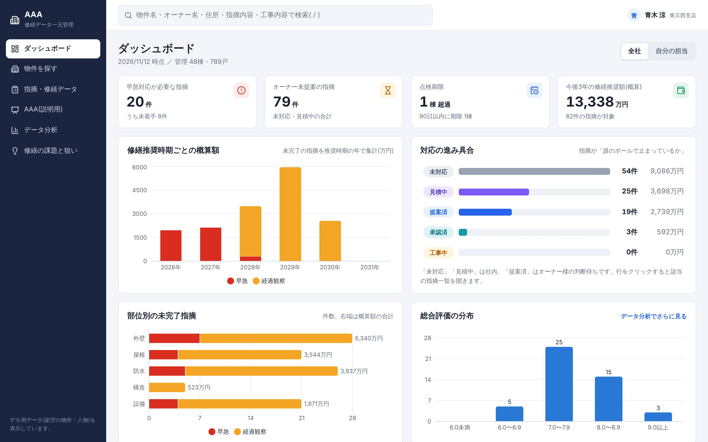
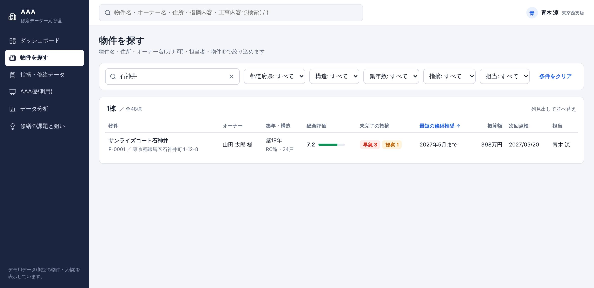
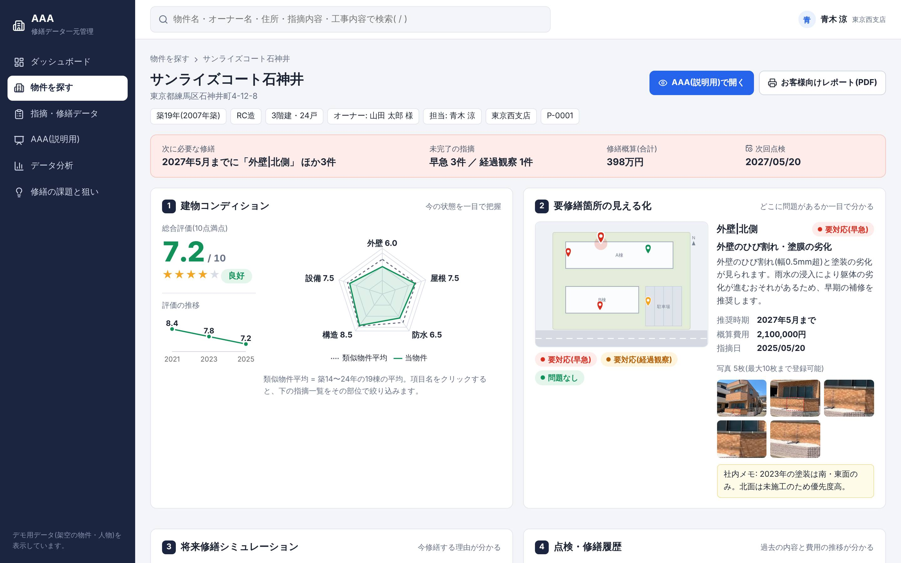
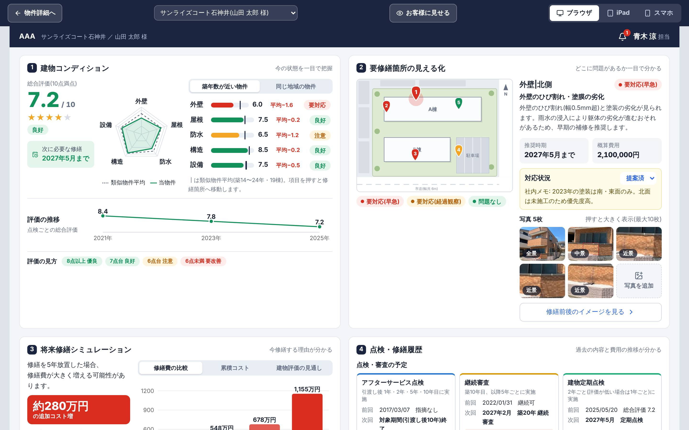
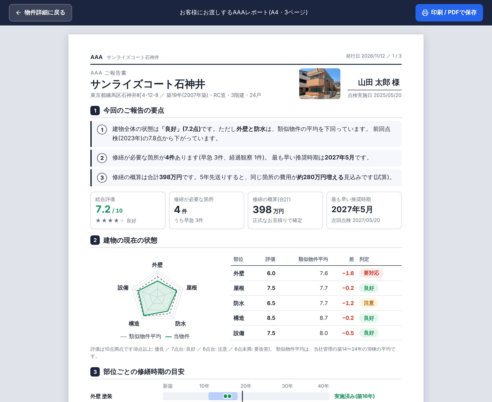
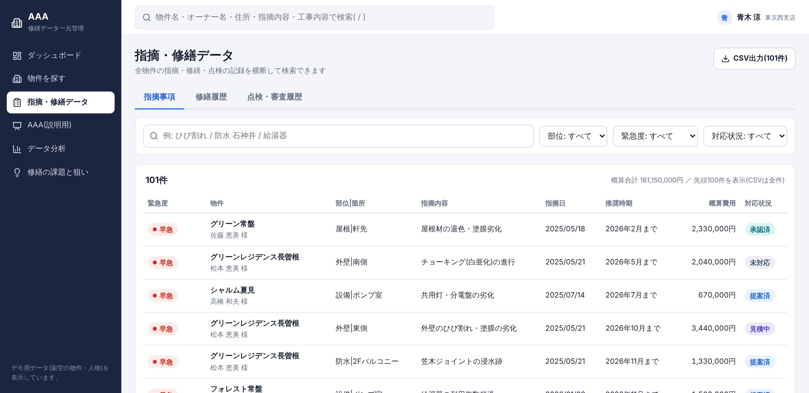
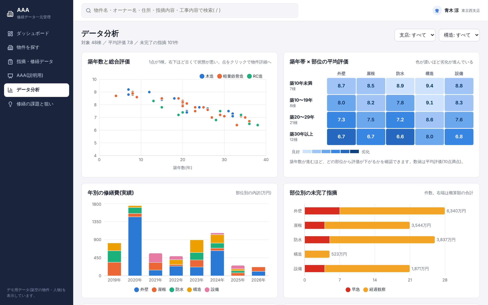
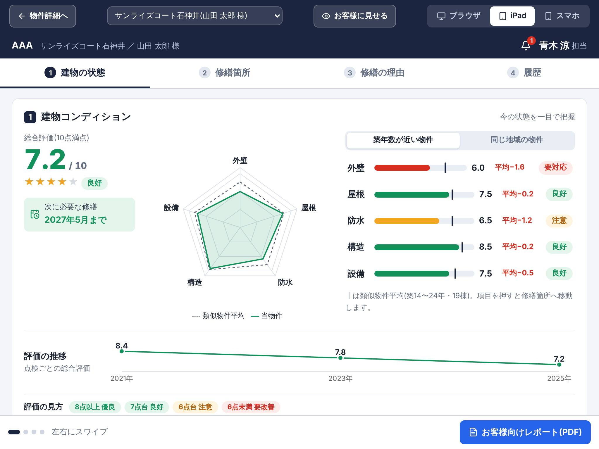
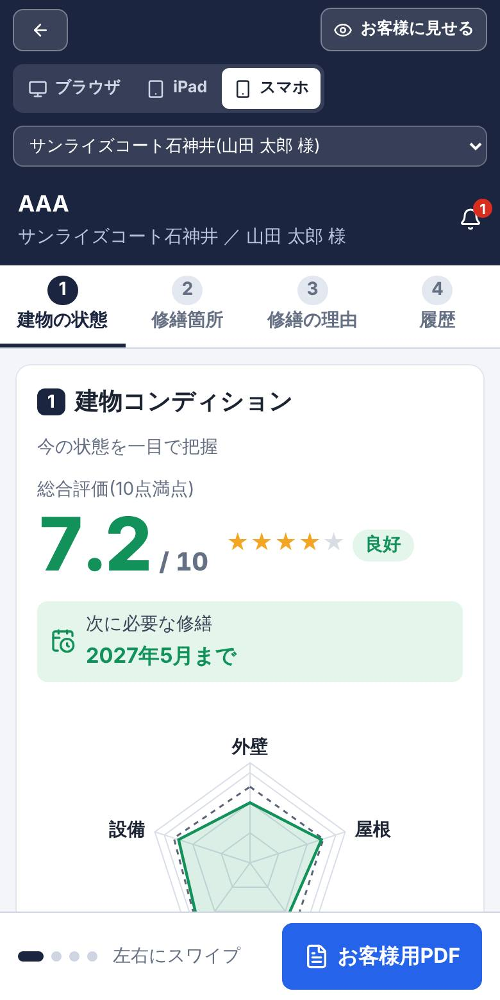
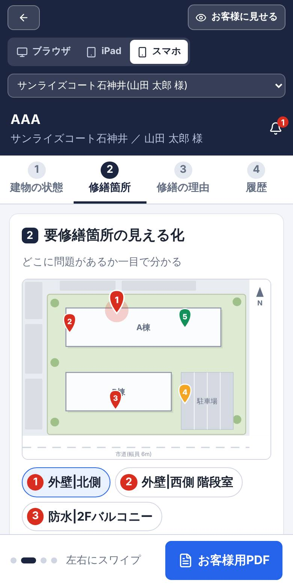

現時点の実装内容
| 作成日 | 2026年11月13日 |
| 対象 | 単一HTML版プロトタイプ(tatemono-karte.html) |
| 位置づけ | 社内提案用デモ。表示データはすべて架空 |
| 1 | 概要 |
| 2 | 画面構成 |
| 3 | 画面別の仕様 |
| 4 | 端末別の表示 |
| 5 | データ項目 |
| 6 | 評価と試算のロジック |
| 7 | 技術構成 |
| 8 | 現時点の制約と未実装 |
| 9 | 画面に使っている調査結果の出典 |
賃貸物件の修繕に関わる情報(点検結果、指摘事項、見積、修繕履歴、オーナーとのやり取り)を1か所にまとめて見える化し、次の3点を実現する。
| 利用者 | 使い方 |
|---|---|
| 社員(担当者) | 主な利用者。全画面を操作する。物件の状態把握、検索、対応状況の更新、オーナーへの説明 |
| 社員(管理職) | ダッシュボードとデータ分析で、全社・支店・担当者ごとの状況を見る |
| オーナー | 自分では操作しない。担当者が「AAA(説明用)」画面を見せるか、A4レポートを受け取る |
| できること | できないこと |
|---|---|
| 全画面の閲覧と画面間の移動、検索と絞り込み、並べ替え、グラフ表示、対応状況の変更(一時的)、試算条件の変更、CSV出力、A4レポートの印刷・PDF保存 | データの保存、ログインと権限、指摘や写真の新規登録、既存システムとの連携、オーナーへの実際の通知 |
左のメニューと画面上部の全体検索から各画面へ移動する。物件に関する画面は「物件詳細」を起点に、説明用画面とレポートへ進む。
| # | 画面 | URL(#以降) | 役割 |
|---|---|---|---|
| 1 | ダッシュボード | / | 今日動くべき案件と全体の状況をつかむ |
| 2 | 物件を探す | /properties | 物件を条件で絞り込み、一覧から詳細へ進む |
| 3 | 物件詳細 | /properties/:id | 1物件の状態・指摘・試算・履歴・やり取りをまとめて見て、対応状況を更新する |
| 4 | AAA(説明用) | /karte/:id | オーナーへの説明に使う4ブロック画面。ブラウザ・iPad・スマホの3表示 |
| 5 | お客様向けレポート | /properties/:id/report | オーナーに渡すA4の報告書。印刷・PDF保存 |
| 6 | 指摘・修繕データ | /records | 全物件の指摘・修繕・点検を横断して検索し、CSVで出力 |
| 7 | データ分析 | /analytics | 築年数・部位・支店・担当者の切り口で傾向を見る |
| 8 | 修繕の課題と狙い | /insights | 公的資料にもとづく修繕の課題と、対応する画面の対応表 |
/
| 要素 | 内容 |
|---|---|
| 表示範囲の切り替え | 「全社」と「自分の担当」 |
| 主要指標(4つ) | 早急対応が必要な指摘、オーナー未提案の指摘、点検期限、今後3年の修繕推奨額(概算) |
| 修繕推奨時期ごとの概算額 | 推奨時期ごとの概算費用を部位別に積み上げた棒グラフ |
| 対応の進み具合 | 対応状況6段階ごとの件数 |
| 部位別の未完了指摘 | 外壁・屋根・防水・構造・設備ごとの件数 |
| 総合評価の分布 | 物件の総合評価の分布 |
| 優先して動く案件 | 早急対応で未完了の指摘の一覧。推奨時期を過ぎたものに印を付ける。行から物件詳細へ |
| 点検期限 | 次回点検が近い、または過ぎた物件 |
/properties
| 要素 | 内容 |
|---|---|
| キーワード | 物件名・オーナー名・住所など。表記ゆれ(全角半角、大文字小文字)を吸収。空白区切りで複数語のAND検索 |
| 絞り込み | 都道府県、構造、築年数の帯、指摘の有無(早急対応あり/経過観察のみ/指摘なし)、担当 |
| 一覧 | 列見出しで並べ替え。行から物件詳細へ |
| 条件の保持 | 検索条件はURLに入るため、URLを共有すれば同じ結果を開ける |
/properties/:id
| 要素 | 内容 |
|---|---|
| 注意の帯 | 早急対応の指摘や点検期限など、その物件でまず見るべきこと |
| 建物コンディション | 総合評価、5項目のレーダーチャート(類似物件平均と重ねて表示)、点検ごとの評価の推移 |
| 要修繕箇所 | 配置図上のピンと写真。修繕前後のイメージ表示 |
| 将来修繕シミュレーション | 先送り年数・工事費上昇率・補修範囲の拡大率をスライダーで変えて試算 |
| 点検・修繕履歴 | 3種別(アフターサービス点検・継続審査・建物定期点検)の前回と次回の予定、点検・審査の履歴、修繕の一覧、年ごとの修繕費の棒グラフ |
| 修繕時期の目安 | 国土交通省ガイドブックの修繕周期と、物件の築年数・修繕実績の照合 |
| 指摘一覧 | 対応状況をその場で変更できる。概算費用の内訳バー |
| やり取りの履歴 | 点検・見積・提案・オーナー連絡・承認・工事を時系列で表示 |
| 移動 | 「AAA(説明用)で開く」「お客様向けレポート(PDF)」 |
/karte/:id担当者がオーナーに画面を見せながら説明するための画面。4つのブロックで構成する。

| ブロック | 内容 | 操作 |
|---|---|---|
| ① 建物コンディション | 総合評価(10点満点)と判定、次に必要な修繕の時期、5項目(外壁・屋根・防水・構造・設備)のレーダーチャート、項目ごとの点数と平均との差、評価の推移 | 比較対象を「築年数が近い物件」「同じ地域の物件」で切り替え。項目を押すと②の該当箇所へ |
| ② 要修繕箇所の見える化 | 地図風の配置図に番号付きのピン。選んだ箇所の内容・推奨時期・概算費用・対応状況・写真(全景/中景/近景) | ピンか一覧で箇所を選ぶ。写真を押すと拡大。修繕前後をスライダーで見比べる。対応状況の変更と社内メモ |
| ③ 将来修繕シミュレーション | 修繕を先送りした場合の追加費用、放置した場合のリスク、利回りの比較 | グラフを「修繕費の比較」「累積コスト」「建物評価の見通し」で切り替え |
| ④ 点検・修繕履歴 | 3種別の点検・審査の予定(前回と次回)、点検・審査の履歴(直近6件)、修繕履歴(日付・箇所・内容・金額) | — |
| 上部の操作 | 内容 |
|---|---|
| 物件の切り替え | 別の物件の説明用画面へ移る |
| お客様に見せる | 押している間は社内メモ、対応状況の変更、物件の切り替え(他のオーナー名)、新着バッジを隠す。対応状況は表示のみになる |
| 表示の切り替え | ブラウザ / iPad / スマホ(4章) |
| 通知設定 | オーナーへの通知方法(メール・LINE・プッシュ通知)の選択。画面上の切り替えのみで、通知は送られない |
/properties/:id/report
オーナーに渡すA4縦の報告書。ブラウザの印刷機能で紙またはPDFにする。ページ数は指摘の件数に応じて増える(例の物件で3ページ)。
| # | 章 |
|---|---|
| 1 | 要点(物件の状態から自動で文章を組み立て) |
| 2 | 建物の状態(レーダーチャートと項目別の表) |
| 3 | 修繕時期の目安 |
| 4 | 修繕が必要な箇所(番号付き配置図と一覧) |
| 5 | なぜ今か(先送りした場合の試算) |
| 6 | 修繕計画 |
| 7 | 点検・修繕の履歴 |
| 8 | 今後の進め方 |
会社名と電話番号は仮の表記(「(管理会社名)」「00-0000-0000」)。
/records
| タブ | 列 |
|---|---|
| 指摘 | 緊急度、物件、部位|箇所、指摘内容、指摘日、推奨時期、概算費用、対応状況。絞り込み結果の概算合計を表示 |
| 修繕 | 修繕日、物件、部位、修繕箇所、修繕内容、金額(税込)、施工会社。金額合計を表示 |
| 点検・審査 | 種別、実施日、物件、回次、結果、内容、実施者。種別で絞り込める |
キーワード検索(例:「防水 石神井」)と絞り込みができ、表示中の結果をCSVで出力できる。
/analytics
| グラフ | 内容 |
|---|---|
| 築年数と総合評価 | 散布図。点を押すと物件詳細へ |
| 築年帯 × 部位 | どの築年帯でどの部位の指摘が多いかの色分け表 |
| 年ごとの修繕費 | 部位別の積み上げ棒グラフ |
| 部位別の指摘、評価の分布 | 件数の棒グラフ |
| 担当者ごとの負荷 | 担当物件と未完了の指摘の件数 |
| 支店別のまとめ | 支店ごとの物件数・評価・指摘・概算額の表 |
支店と構造で絞り込める。
/insights調査で確認した修繕の課題7点を、出典とともに示し、それぞれに対応する画面へのリンクを置く。出典は9章。
AAA(説明用)は1つの画面を3通りに表示する。開いたときの画面幅とタッチ操作の有無から自動で選び、上部のボタンで手動でも切り替えられる。
| 表示 | 自動で選ばれる条件 | 構成 |
|---|---|---|
| ブラウザ | 幅1100px以上(タッチ端末は1400px以上) | 4ブロックを2列×2段に並べた1画面 |
| iPad | 幅700px以上で上記未満 | ①〜④を1ページずつ。上部タブか左右スワイプで移動。情報量はブラウザ表示と同等 |
| スマホ | 幅700px未満 | ①〜④を1ページずつスワイプ。文字は14px以上、表はカード形式に置き換え |



そのほかの画面(ダッシュボード、検索、分析など)はパソコンのブラウザでの利用を想定している。実機のiPad・iPhoneでの確認は未実施。
プロトタイプが内部で持っている項目。実データを入れる際の項目定義のたたき台になる。
| 項目 | 内容 |
|---|---|
| 物件ID、物件名 | 例: P-0001 |
| 所在地 | 都道府県、市区町村、住所 |
| 支店、担当者 | 管理する支店と担当社員 |
| オーナー | 氏名、カナ |
| 建物 | 竣工年、築年数、構造(木造/軽量鉄骨造/RC造)、階数、戸数 |
| 評価 | 5項目(外壁・屋根・防水・構造・設備)の点数と総合評価 |
| 配置図 | 建物と駐車場の位置と大きさ |
| 点検 | 前回点検日、次回点検日 |
| 通知設定 | メール、LINE、プッシュ通知の有無 |
| 項目 | 内容 |
|---|---|
| 指摘ID、物件ID | 例: F-0001 |
| 部位、箇所 | 部位は5区分。箇所は自由記述(例: 北側、2Fバルコニー) |
| 緊急度 | 要対応(早急)/要対応(経過観察)/問題なし |
| 件名、説明 | 指摘の内容 |
| 指摘日、推奨修繕時期 | 推奨時期は「この月まで」 |
| 概算費用 | 円 |
| 対応状況、更新日 | 未対応/見積中/提案済/承認済/工事中/完了 |
| 配置図上の位置 | ピンの座標 |
| 写真枚数、社内メモ | — |
| 種類 | 項目 |
|---|---|
| 点検・審査 | ID、物件ID、種別(アフターサービス点検/継続審査/建物定期点検)、実施日、回次、結果、内容、実施者。建物定期点検は総合評価を持つ |
| 修繕 | 修繕ID、物件ID、修繕日、部位、修繕箇所、修繕内容、金額、施工会社 |
| やり取り | ID、物件ID、日付、種類(点検/指摘登録/見積/提案/オーナー連絡/承認/工事/報告書)、実施者、手段(メール/LINE/電話/訪問/マイページ)、内容、オーナーに見せてよい記録か |
| 項目 | 内容 |
|---|---|
| 項目別評価 | 外壁・屋根・防水・構造・設備をそれぞれ10点満点で評価 |
| 総合評価 | 5項目の平均(小数1桁) |
| 判定 | 8点以上「優良」、7点台「良好」、6点台「注意」、6点未満「要改善」 |
| 比較対象 | 範囲 |
|---|---|
| 築年数が近い物件 | 同じ構造で築年数が±5年以内の物件の平均。3件に満たない場合は構造を問わず築年数±5年 |
| 同じ地域の物件 | 同じ都道府県の物件の平均。3件に満たない場合は全物件 |
| 前提 | 初期値 | 根拠 |
|---|---|---|
| 現在の概算費用 | 未完了の要対応指摘の概算費用の合計 | — |
| 先送り年数 | 5年 | — |
| 工事費の年間上昇率 | 3% | 建設コストの上昇を踏まえた仮定(9章) |
| 補修範囲の年間拡大率 | 8% | 仮定。裏づける公的な統計は見つかっていない |
例の物件(サンライズコート石神井)では、現在398万円が5年後に約678万円となり、追加費用は約280万円。累積コストのグラフは、両方の場合に共通の小修繕費を毎年加えて15年分を表示する。
国土交通省「民間賃貸住宅の計画修繕ガイドブック」の修繕周期と、物件の築年数・修繕実績を照らして「目安まであと○年」「目安時期に入っています」「目安時期を経過」「実施済み」を表示する。
| 工事 | 目安(築年数) | 工事 | 目安(築年数) |
|---|---|---|---|
| 外壁 塗装 | 11〜18年 | 階段・廊下 鉄部塗装 | 4〜10年 |
| 屋根 塗装・補修 | 11〜15年 | 給湯器・エアコン 交換 | 11〜15年 |
| 屋根 防水・葺替 | 21〜25年 | 給排水管 取替 | 30年 |
| 階段・廊下 塗装・防水 | 11〜18年 |
| 種別 | 実施時期(仮) | 結果の区分(仮) |
|---|---|---|
| アフターサービス点検 | 引渡し後 1年・2年・5年・10年目 | 指摘なし/補修実施 |
| 継続審査 | 築10年目、以降5年ごと | 継続可/条件付き継続 |
| 建物定期点検 | 2年ごと(評価が低い場合は1年ごと) | 総合評価(10点満点) |
3種別とも内容はダミーで、実施時期と結果の区分は仮の設定。次回の継続審査まで2年以内で、要対応(早急)の指摘が未完了の場合は、物件詳細と説明用画面に注意を表示する。
③に表示する「計画修繕を行った場合と行わなかった場合の利回り」は、国土交通省の資料の試算値をそのまま引用している(木造 2.78% と 2.13%、RC造 2.53% と 1.90%)。物件ごとの計算はしていない。
| 項目 | 内容 |
|---|---|
| 配布形態 | HTMLファイル1つ(約1MB)。プログラム・デザイン・写真をすべて内蔵し、ダブルクリックで開ける。通信は発生しない |
| 使用技術 | React、TypeScript、Vite、Recharts(グラフ)、lucide-react(アイコン) |
| データ | ファイル内で生成する架空データ。物件48件と、それに紐づく指摘・点検・修繕・やり取り |
| 状態の保持 | 対応状況の変更などはブラウザのメモリ上のみ。再読み込みで初期状態に戻る |
| 印刷 | お客様向けレポートはA4縦に合わせた印刷用レイアウト |
| ソースコード | リポジトリの karte/ フォルダ。npm run build:html で単一HTMLを生成 |
| 区分 | 内容 |
|---|---|
| データ | すべて架空。評価点、概算費用、推奨時期の基準は仮置き |
| 保存 | 変更は保存されない。複数人での同時利用はできない |
| ログイン・権限 | なし。担当者は固定の1名として表示 |
| 登録 | 指摘・点検・修繕の新規登録画面はない。「写真を追加」は表示のみ |
| 写真 | 1枚の建物写真を全物件で共用し、切り出して全景・中景・近景としている。実際の損傷は写っていない。「修繕前」の画像は同じ写真を加工したもの |
| 配置図 | 架空の配置(A棟・B棟)で、写真の建物とは一致しない |
| 通知 | 設定の切り替え表示のみ。メール・LINE・プッシュ通知は送られない |
| 連携 | 基幹システムや点検報告書との連携はない |
| 会社情報 | 会社名、電話番号、ロゴは仮 |
| 動作確認 | パソコンのブラウザ(Chromium)で確認。iPad・iPhoneの実機は未確認 |
| 出典 | 使っている内容 |
|---|---|
| 国土交通省 民間賃貸住宅の計画修繕ガイドブック | 修繕周期の目安(6.5)。計画修繕の有無による利回りの試算(6.7) |
| 国土交通省 賃貸住宅管理業者向けの資料 | 民間賃貸住宅 約1,530万戸。計画修繕を実施しているオーナーは約4割、未実施は約2割。管理業者の約2割が未実施、約4割が「ノウハウがない」と回答 |
| 国土交通省 2017年の調査 | オーナー・管理に関する調査結果の数値(36.6%、22.8%、94.1%、12.3%) |
| 国土交通省 賃貸住宅管理業者への立入検査 | 168社中118社に是正指導。うちオーナーへの定期報告に関する違反が17件 |
| 日本建設業連合会 | 建設資材の価格は5年で39%上昇、直近2年で9%上昇。建設コスト全体で7.3〜8.2%の上昇 |
「先送りすると工事費が何割増えるか」「データが分散していることによる損失」を直接示す公的な統計は見つかっておらず、画面上でも仮定・仮説と明記している。